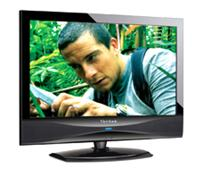

Medios de comunicación masiva
Son los medios de comunicación recibidos simultáneamente por una gran audiencia.
Su propósito principal es, precisamente, comunicar, pero según su tipo pueden especializarse en: informar, educar, transmitir, entretener, formar opinión, vender, etc.
Los más comunes son:
Prensa Escrita: son publicaciones impresas que se clasifican según cada cuanto tiempo aparecen.
Todos los días… en este caso suele llamarse “Diarios”, o más comúnmente “Periódico”.
Una vez a la semana… se les conoce como “Semanarios” o “Revista”, según el material y forma como se imprimen.
Una vez al mes… es el caso de muchas revistas especializadas.
Una vez al año… se le llama “Anuario”, y mayormente se le usa como directorios profesionales y comerciales, u órganos informativos.
Existe desde la aparición de la imprenta (Siglo XV), siendo el primer medio de comunicación de masas y soporte original del Periodismo.
La Radio o Radiodifusión: se basa en el envío de señales de audio a través de ondas de radio.

El término se usa también para otras formas de envío de audio a distancia como la “Radio por Internet”.
Las primeras transmisiones regulares, comenzaron en 1920. Antes de la llegada de la televisión, la radiodifusión incluía no solo noticias y música, sino dramas, comedias, shows de variedades, concursos y muchas otras formas de entretenimiento.
La clasificación más común de las emisoras en Venezuela es AM y FM, según el sistema de modulación de señal que se utilice, siendo las FM más difundidas, ya que su señal está libre de interferencias y el sonido se transmite con mayor fidelidad.
Radios comunitarias… Recientemente han aparecido radios de baja potencia, constituidas bajo la idea de “Radio Libre” o “Radio Comunitaria”, con la idea principal de brindar una alternativa a la radiodifusión comercial, y permitir una mayor cercanía con la población.
Radio por Internet… Hoy en día este medio a través de Internet avanza con celeridad. Por eso, muchas de las grandes emisoras empiezan a experimentar con emisiones por Internet.
La primera y más sencilla es una emisión en línea, la cual llega a un público global, de hecho su rápido desarrollo ha supuesto una rivalidad con la televisión, lo que irá aparejado con el desarrollo de la banda ancha en Internet.
La Televisión: La palabra "Televisión" es un híbrido de la voz griega "Tele" (distancia) y la latina "visio" (visión).
La palabra "Televisión" es un híbrido de la voz griega "Tele" (distancia) y la latina "visio" (visión).
El término Televisión se refiere a todos los aspectos de transmisión y programación, que busca entretener e informar al televidente con una gran diversidad de programas.
Además es un medio de comunicación muy eficiente, basado en un sistema para la transmisión y recepción de imágenes en movimiento y sonido, a distancia.
Esta transmisión puede ser efectuada mediante ondas de radio o por redes especializadas de televisión por cable. El receptor de las señales es el televisor.